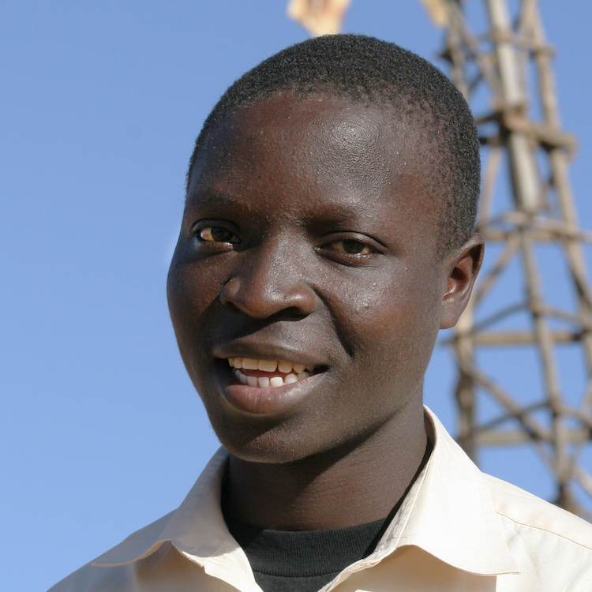
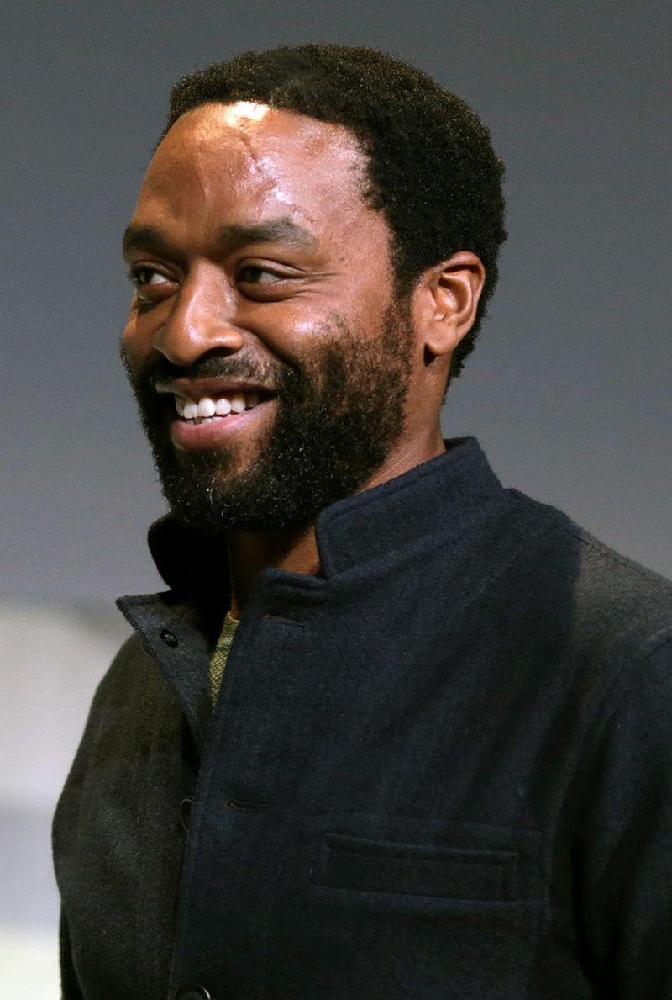
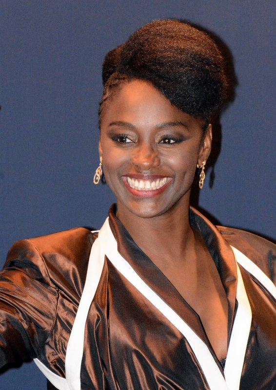

Sobre: Ator queniano conhecido por seu papel como William Kamkwamba no filme de 2019 da Netflix "Movie The Boy Who Harnessed the Wind".
"The Boy Who Harnessed The Wind" foi sua estréia como ator.

Imagem de William Kamkwamba
Trywell Kamkwamba
Interpretado por: Chiwetel Umeadi Ejiofor
Nascimento: 10 de Julho, 1977
Local de nascimento: Forest Gate, Londres, Reino Unido
Sobre: É um ator e cineasta inglês. Em 2006 recebeu duas indicações ao prêmio Golden Globe por Melhor performance.

Imagem de Chiwetel Ejiofor
Agnes Kamkwamba
Interpretada por: Aïssa Maïga
Nascimento: 15 de Maio, 1975
Local de nascimento: Dakar, Senegal
Sobre: É uma atriz, diretora, escritora, produtora e ativista francesa. Maïga é uma defensora da inclusão e tem falado sobre discriminação racial na indústria cinematográfica ao longo de sua carreira.

Imagem de Aïssa Maïga
Annie Kamkwamba
Interpretada por: Lily Banda
Nascimento: 16 de Agosto, 1990
Local de nascimento: Malawi, África
Sobre: É uma atriz, cantora, compositora, dançarina e poetisa
Imagem de Lily Banda
Edith Sikelo
Interpretado por: Noma Dumezweni
Nascimento: 28 de julho, 1969
Local de nascimento: Eswatini, África
Sobre: é uma atriz britânica. Em 2006, ela ganhou o prêmio Laurence Olivier de Melhor Performance em Papel Coadjuvante por sua atuação como Ruth Younger em A Raisin in the Sun no Lyric Hammersmith Theatre.